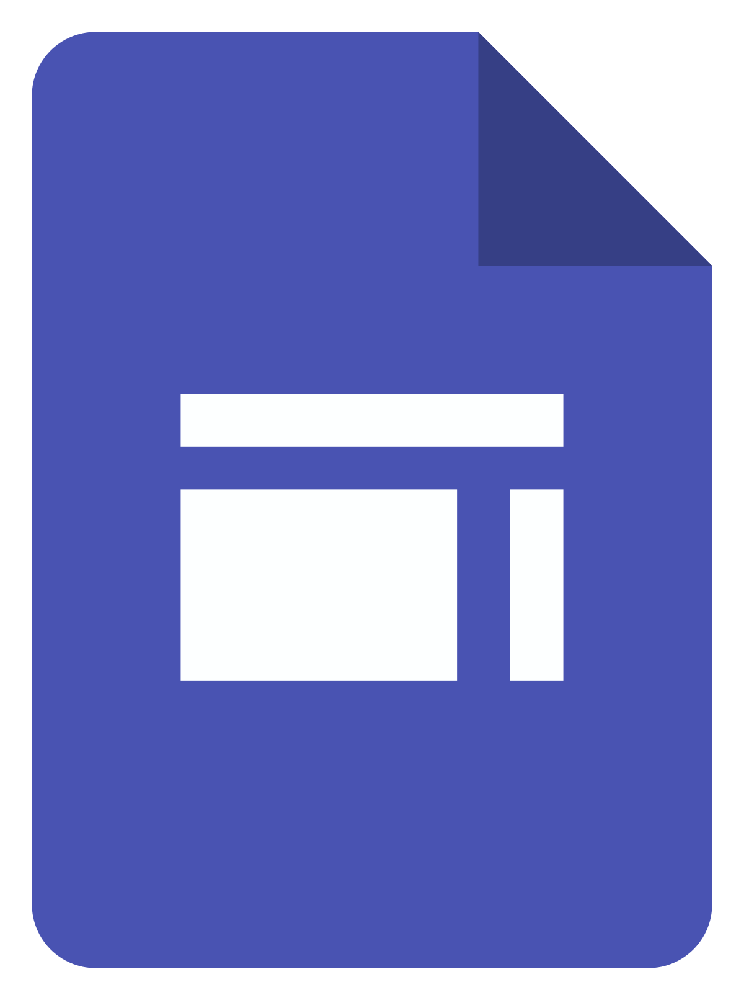
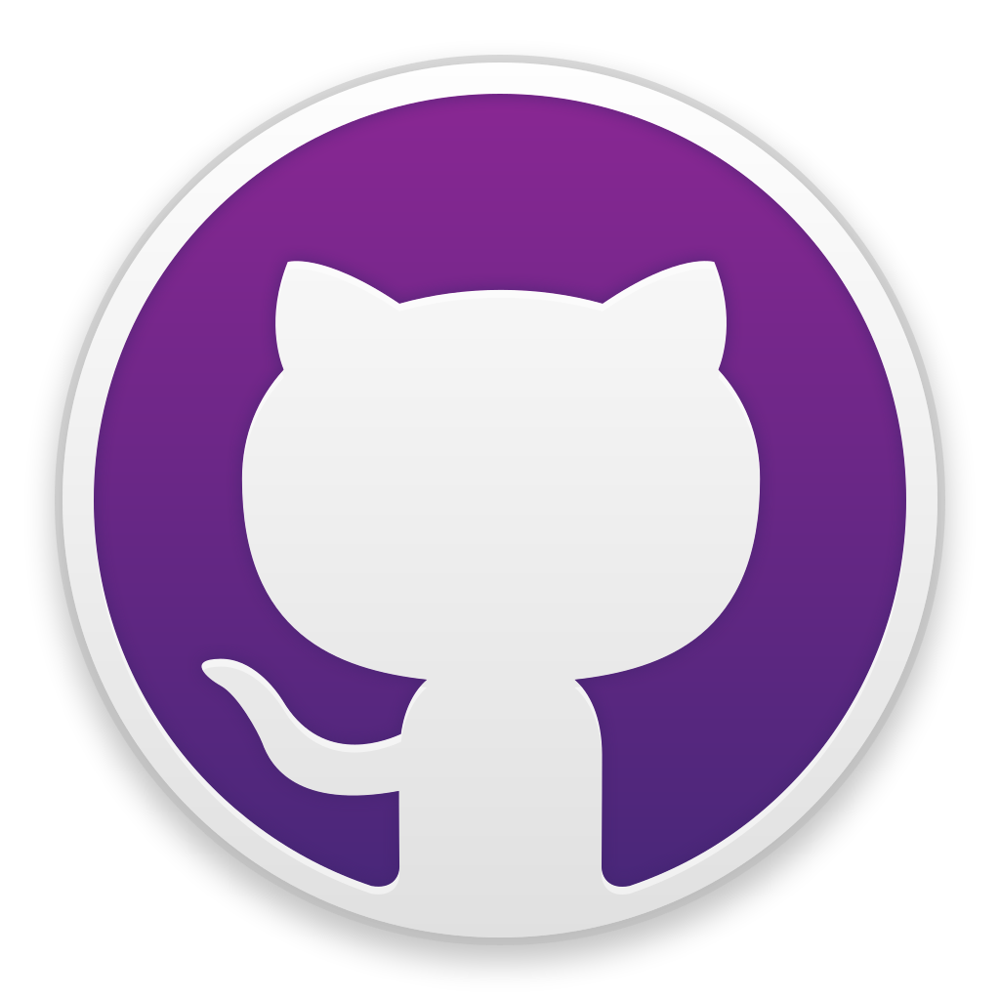
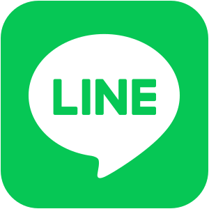
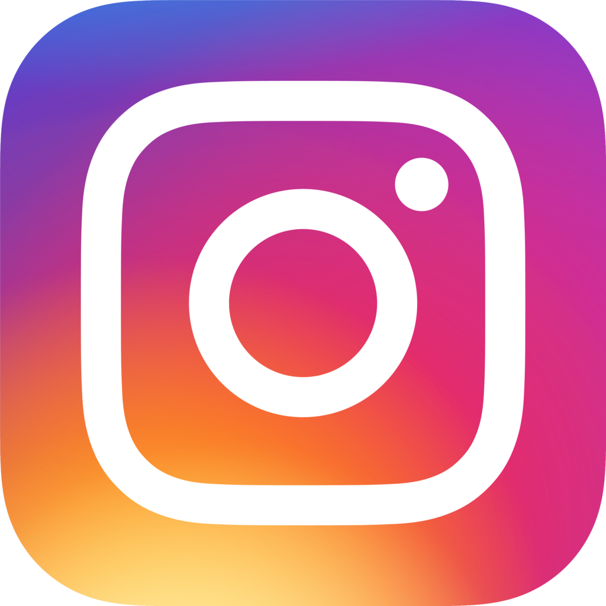

Tutoriomatic mengusung tema tentang
"Static Web Design : One Page Responsive Portfolio
Website".
Tutoriomatic berasal dari gabungan kata “Tutorial” dan “Automatic” dengan
makna sebagai berikut :
- “Tutorial” → produk yang kami buat yaitu berupa video tutorial seputar
tips dan trik di bidang responsive web design.
- “Automatic” → terdapat harapan kepada para penonton yang telah menonton
video kami agar “otomatis” ahli di bidang responsive web design dengan
dorongan motivasi dan semangat belajar yang tinggi.
prob.krshn@gmail.com

http://bit.ly/probo-krishnacahya
cahyaa5758
krshn_
@p.krshn
vannessanthony123@gmail.com
http://bit.ly/vanness-zhong-a
vanness7890
vanness.z.a78
@vannessanthony123
nathanaelabel84@gmail.com
http://bit.ly/nathanaelabel
Maumau20
nathanaelabel
@nathanael_abel
Pictorial mark → Terdapat gabungan dari teardrop shape yang menyerupai bentuk palet (wadah) cat yang berisi panah ke kiri dan kanan (tag) seperti tanda kurang dari (<) dan lebih dari (>) dalam coding untuk pembuatan website yang mengapit semacam kuas berupa pen tool sebagai salah satu alat yang banyak digunakan dalam konten desain visual. Sementara, di sisi bawahnya terdapat teks logo Tutoriomatic.
Combination (wordmark yang dibuat membentuk character / mascot logo) → Terdapat gambar yang terbuat dari tombol pada keyboard yaitu kurung pembuka “(” sebagai bagian belakang kepala, angka nol “0” sebagai bagian mata yang membesar karena menunjukkan ketertarikan terhadap sesuatu (teks logo Tutoriomatic) hingga mata berbentuk seperti oval, kurung kurawal “}” sebagai bagian hidung, dan kurung penutup “)” yang dirotasi 90 derajat sebagai bagian mulut sehingga membentuk 2 wajah yang tersenyum saling berhadapan menatap teks logo Tutoriomatic.
Pictorial mark → Terdapat gambar globe dan simbol lokasi yang memiliki arti para pengakses website dapat memperoleh informasi yang tersedia di internet tanpa terpengaruh jarak geografis diantara mereka. Selain itu, gambar orbit digunakan sebagai dekorasi tambahan. Sedangkan, shape lingkaran melambangkan kekekalan, kekompakan dan harmoni.
Pictorial mark → Terdapat 2 lambang yaitu tanda lebih besar dari (>) dan tanda lebih kecil dari (<) yang menyerupai pensil yang berarti membuat kita dapat menerapkan suatu ide yang dirancang.
Pictorial mark → Terdapat gambar lampu dan di dalam lampu terdapat gambar abstrak yang memiliki arti bahwa setiap manusia memiliki pemikiran yang unik dan juga terdapat font yang berbentuk seperti gerigi roda memiliki arti sebuah proses. Sehingga dapat dimaknai bahwa manusia berproses dengan ide yang unik tersebut.
Pictorial mark → Terdapat gambar networking yang memiliki arti membangun relasi dan hubungan yang luas melalui perantara website sebagai penghubung antar pihak.
Pictorial mark → Terbentuk dari tanda kurung buka ({) dan tanda kurung tutup (}), simbol ini biasa sering digunakan dalam bahasa CSS untuk membuat dan memodifikasi sebuah class ataupun id. Didalamnya terdapat simbol lebih kecil (<), garis miring (/), dan lebih besar (>), simbol ini sering digunakan dalam HTML dimana saat kita ingin membuat inline bgcolor maupun block bgcolor. Bentuk ini disatukan dan mirip seperti baterai menyimbolkan seperti teknologi baterai yang akan terus berjalan dan bisa di charge. Banyak referensi ini lebih mengarah ke HTML, CSS, dan JS karena produk kami adalah memberikan penjelasan tutorial mengenai responsive web design.
3D → Terlihat seperti berbentuk balok yang didalamnya terdapat 2 buah bangun datar persegi panjang dan sebuah lingkaran (berisi huruf T dan O singkatan Tutoriomatic). Logo ini berbentuk seperti balok tipis menyerupai sebuah balok mainan anak balita dan ada beberapa bangun datar persegi panjang dan lingkaran diatasnya. Maksudnya yakni walaupun ini adalah ilmu yang baru dan belum pernah dipelajari sebelumnya tapi dengan belajar secara perlahan kita bisa memahami hal yang baru.
Lettermark / Initials → huruf T yang melambangkan nama tim kami yakni Tutoriomatic. Desain huruf T dibuat seunik mungkin dari gabungan dua rounded rectangle dipotong menggunakan dua buah lingkaran dan dikombinasikan menggunakan shape builder tool. Melambangkan identitas dari tim Tutoriomatic dengan huruf T kapital diawal nama.
- Terdapat frame di ujung masing-masing sudut terinspirasi dari frame
video recording pada kamera (sebagai dekorasi tambahan untuk
poster).
- Terdapat sepasang 3 buah hexagon berseberangan yang terdapat di
samping tengah poster melambangkan 3 orang anggota tim
Tutoriomatic dan memilih hexagon shape karena filosofinya yaitu “yang
dapat diandalkan dan bertanggung jawab” serta banyak digunakan untuk
menginterpretasikan suatu produk di bidang teknologi.
- Terdapat logo Tutoriomatic dan logo YouTube sebagai platform untuk
upload video tutorial yang dibahas Tutoriomatic, yaitu Responsive Web
Design.
- Terdapat gambar smartphone dan laptop yang menunjukkan hasil website
yang responsive (dapat diakses pada beragam perangkat ataupun ukuran
layar dengan layout yang tetap tertata rapi).
- Terdapat gambar globe sebagai background yang menginterpretasikan
website yang terdapat di internet.
- Di dalam poster terdapat 3 prinsip yaitu creative, networking, dan
process. Filosofinya adalah di dalam sebuah tim, kita harus
memiliki pemikiran kreatif dan Networking kita dapat menyampaikan
pemikiran kita terhadap orang lain dan Process yang berarti untuk
mewujudkan pemikiran tersebut membutuhkan sebuah proses yang cukup
panjang.
- Terdapat bentuk lingkaran pada gambar lingkaran pada creative,
networking, dan process. Bentuk lingkaran memiliki filosofi yang
berarti komunitas, integritas, dan kesempurnaan.
- Terdapat logo Tutoriomatic dan logo YouTube.
- Poster diatas dibuat dengan desain simpel yang bertujuan bahwa
produk atau tutorial yang kami berikan tidaklah rumit dan siapapun
dapat mempelajarinya jika memiliki kemauan untuk belajar.
- Sebuah persegi panjang dan judul paling besar diatas menggunakan
font Bahnschrift dengan warna kuning #FFFF00. Kemudian teks-teks
lainnya, digunakan font Agency FB karena terlihat keren seperti robot
dan masih cocok digunakan untuk bidang teknologi.
- Terdapat bentuk ‘web design layout’ pada tengah-tengah poster.
Elemen tersebut dibuat dari gabungan beberapa kombinasi persegi
panjang dan garis tebal berwarna kuning #FFFF00. Elemen ‘web design layout’ tersebut adalah ilustrasi dari tema kami yaitu memberikan ilmu
mengenai “Responsive Web Design”.